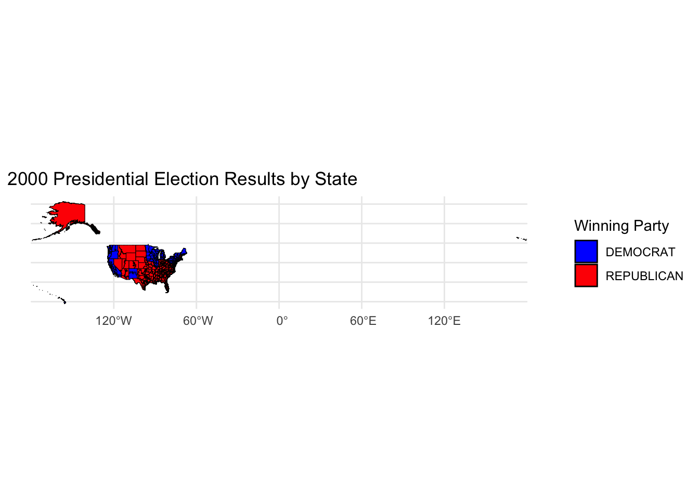

Mini-Project #03: Do Proportional Electoral College Allocations Yield a More Representative Presidency?
Introduction: For this assignment I analyzed if the the claim that the U.S. Electoral College systematically biases election results away from the popular vote. In January 2021, Democratic Party’s leading data analysts, David Shor, stated “One underrated thing about the 2020 election is that the partisan bias of the electoral college, already at it’s largest point in nearly a century, got substantially larger.” To analyze their claim, I worked with political data such as presidential election results under different allocations for presence or absence of bias.
Exploration of Vote Count Data
- Which states have gained and lost the most seats in the US House of Representatives between 1976 and 2022?
To answer this question, I first calculated the changes in the House of Representatives. From the graph below we can see leads with the most seats gained, followed by Florida, California, Arizona, and Georgia. States that have lost the most seats are New York with 13 seats lost, Ohio and Pennsylvania both tie with 8, then Illinois lost 7 and lastly Michigan with 6.
# A tibble: 5 × 4
state seats_1976 seats_2022 seat_change
<chr> <int> <int> <int>
1 TEXAS 24 38 14
2 FLORIDA 15 28 13
3 CALIFORNIA 43 52 9
4 ARIZONA 4 9 5
5 GEORGIA 10 14 4# A tibble: 5 × 4
state seats_1976 seats_2022 seat_change
<chr> <int> <int> <int>
1 NEW YORK 39 26 -13
2 OHIO 23 15 -8
3 PENNSYLVANIA 25 17 -8
4 ILLINOIS 24 17 -7
5 MICHIGAN 19 13 -6- Are there any elections in our data where the election would have had a different outcome if the “fusion” system was not used and candidates only received the votes their received from their “major party line” (Democrat or Republican) and not their total number of votes across all lines?
From our data, we know that there has been elections were the outcome with no fusion would have been different
# A tibble: 2 × 8
year candidate party candidatevotes allpartyvotes totalvotes
<dbl> <chr> <chr> <dbl> <dbl> <dbl>
1 2020 GEORGE AD SANTOS REPUBLICAN 147461 161931 398887
2 2020 CHRIS JACOBS REPUBLICAN 192619 228885 397802
# ℹ 2 more variables: outcome_with_fusion <chr>, outcome_no_fusion <chr>- Do presidential candidates tend to run ahead of or run behind congressional candidates in the same state? That is, does a Democratic candidate for president tend to get more votes in a given state than all Democratic congressional candidates in the same state?
Looking at the data I collected it seems Democratic candidate for president tend to run ahead congressional candidates in the same state by 318. The average difference is also pretty significant totaling 29538.93.
Code
presidential_votes <- presidents_1976_2020 |>
filter(party_simplified == "DEMOCRAT") |>
group_by(state, year) |>
summarise(total_pres_votes = sum(candidatevotes), .groups = "drop")Code
reps_votes <- house_of_reps |>
filter(party == "DEMOCRAT") |>
group_by(state, year) |>
summarise(total_cong_votes = sum(candidatevotes), .groups = "drop")Code
vote_comparison <- presidential_votes |>
inner_join(reps_votes, by = c("state", "year")) |>
mutate(difference = total_pres_votes - total_cong_votes)
vote_comparison |>
summarise(
avg_difference = mean(difference),
pres_runs_ahead = sum(difference > 0),
pres_runs_behind = sum(difference < 0))# A tibble: 1 × 3
avg_difference pres_runs_ahead pres_runs_behind
<dbl> <int> <int>
1 29539. 318 274Does this trend differ over time? Onaverage over time the trends seems to increase.
Code
library(ggplot2)
ggplot(vote_comparison, aes(x = year, y = difference)) +
geom_point() +
labs(
title = "Average Difference Between Presidential and Congressional Votes Over Time",
x = "Year",
y = "Average Vote Difference"
)
Does it differ across states or across parties?
#| message: false
#| warning: false
#| code-fold: true
library(ggplot2)
library(dplyr)
trend_by_state <- vote_comparison |>
group_by(state) |>
summarise(avg_difference = mean(difference), .groups = "drop")
ggplot(trend_by_state, aes(x = reorder(state, avg_difference), y = avg_difference)) +
geom_point() +
labs(
title = "Average Vote Difference by State",
x = "State",
y = "Average Vote Difference"
) +
theme_minimal() +
theme(axis.text.x = element_text(angle = 90, hjust = 1))Importing and Plotting Shape File Data
[1] "tl_2014_us_cd114"
[1] "tl_2015_us_cd114"
[1] "tl_2016_us_cd115"
[1] "tl_2017_us_cd115"
[1] "tl_2018_us_cd116"
[1] "tl_2019_us_cd116"
[1] "tl_2020_us_cd117"
[1] "tl_2021_us_cd117"
[1] "tl_2022_us_cd118"
Task 6: Advanced Chloropleth Visualization of Electoral College Results
Comparing the Effects of ECV Allocation Rules
- State-Wide Winner-Take-All
# A tibble: 5 × 5
year state party_simplified candidate totalvotes
<dbl> <chr> <chr> <chr> <dbl>
1 2020 CALIFORNIA DEMOCRAT BIDEN, JOSEPH R. JR 11110250
2 2016 CALIFORNIA DEMOCRAT CLINTON, HILLARY 8753788
3 2008 CALIFORNIA DEMOCRAT OBAMA, BARACK H. 8274473
4 2012 CALIFORNIA DEMOCRAT OBAMA, BARACK H. 7854285
5 2004 CALIFORNIA DEMOCRAT KERRY, JOHN 6745485- District-Wide Winner-Take-All + State-Wide “At Large” Votes
# A tibble: 5 × 6
# Groups: year, state, party, district [5]
year state party district candidate totalvotes
<dbl> <chr> <chr> <dbl> <chr> <dbl>
1 2020 WASHINGTON DEMOCRAT 7 PRAMILA JAYAPAL 387109
2 2020 OREGON DEMOCRAT 3 EARL BLUMENAUER 343574
3 2020 PENNSYLVANIA DEMOCRAT 3 DWIGHT EVANS 341708
4 2020 NORTH CAROLINA DEMOCRAT 12 ALMA S ADAMS 341457
5 2020 MONTANA REPUBLICAN 0 MATT ROSENDALE 339169- State-Wide Proportional
# A tibble: 4,287 × 5
year state candidate party_simplified proportional
<dbl> <chr> <chr> <chr> <dbl>
1 2008 DISTRICT OF COLUMBIA OBAMA, BARACK H. DEMOCRAT 0.925
2 2020 DISTRICT OF COLUMBIA BIDEN, JOSEPH R. JR DEMOCRAT 0.921
3 2012 DISTRICT OF COLUMBIA OBAMA, BARACK H. DEMOCRAT 0.909
4 2016 DISTRICT OF COLUMBIA CLINTON, HILLARY DEMOCRAT 0.905
5 2004 DISTRICT OF COLUMBIA KERRY, JOHN DEMOCRAT 0.892
6 1984 DISTRICT OF COLUMBIA MONDALE, WALTER DEMOCRAT 0.854
7 1996 DISTRICT OF COLUMBIA CLINTON, BILL DEMOCRAT 0.852
8 2000 DISTRICT OF COLUMBIA GORE, AL DEMOCRAT 0.852
9 1992 DISTRICT OF COLUMBIA CLINTON, BILL DEMOCRAT 0.846
10 1988 DISTRICT OF COLUMBIA DUKAKIS, MICHAEL DEMOCRAT 0.826
# ℹ 4,277 more rows- National Proportional
# A tibble: 5 × 18
year state state_po state_fips state_cen state_ic office candidate
<dbl> <chr> <chr> <dbl> <dbl> <dbl> <chr> <chr>
1 1984 ALABAMA AL 1 63 41 US PRESIDENT REAGAN, …
2 1984 ALASKA AK 2 94 81 US PRESIDENT REAGAN, …
3 1984 ARIZONA AZ 4 86 61 US PRESIDENT REAGAN, …
4 1984 ARKANSAS AR 5 71 42 US PRESIDENT REAGAN, …
5 1984 CALIFORNIA CA 6 93 71 US PRESIDENT REAGAN, …
# ℹ 10 more variables: party_detailed <chr>, writein <lgl>,
# candidatevotes <dbl>, totalvotes <dbl>, version <dbl>, notes <lgl>,
# party_simplified <chr>, candidate_votes <dbl>, total <dbl>,
# national_proportional <dbl>Based on these allocation strategies, compare the winning presidential candidate with the actual historical winner.
# A tibble: 9 × 10
year state.x party_simplified candidate.x totalvotes.x state.y party district
<dbl> <chr> <chr> <chr> <dbl> <chr> <chr> <dbl>
1 2020 CALIFO… DEMOCRAT BIDEN, JOS… 11110250 WASHIN… DEMO… 7
2 2020 CALIFO… DEMOCRAT BIDEN, JOS… 11110250 OREGON DEMO… 3
3 2020 CALIFO… DEMOCRAT BIDEN, JOS… 11110250 PENNSY… DEMO… 3
4 2020 CALIFO… DEMOCRAT BIDEN, JOS… 11110250 NORTH … DEMO… 12
5 2020 CALIFO… DEMOCRAT BIDEN, JOS… 11110250 MONTANA REPU… 0
6 2016 CALIFO… DEMOCRAT CLINTON, H… 8753788 <NA> <NA> NA
7 2008 CALIFO… DEMOCRAT OBAMA, BAR… 8274473 <NA> <NA> NA
8 2012 CALIFO… DEMOCRAT OBAMA, BAR… 7854285 <NA> <NA> NA
9 2004 CALIFO… DEMOCRAT KERRY, JOHN 6745485 <NA> <NA> NA
# ℹ 2 more variables: candidate.y <chr>, totalvotes.y <dbl># A tibble: 2 × 3
candidate total_votes candidate_votes
<chr> <dbl> <dbl>
1 BUSH, GEORGE W. 112554197 50456169
2 GORE, AL 119514412 50996062After evaluating various Electoral College Vote (ECV) allocation schemes, I conclude that the State-Wide Proportional method is the fairest approach for allocating electoral votes in U.S. presidential elections. Under this scheme, electoral votes are distributed based on the proportion of the popular vote each candidate receives within each state. This method minimizes the winner-takes-all bias seen in other systems, where a candidate can win the state’s electoral votes with only a narrow margin in the popular vote.
Citation
MIT Election Data and Science Lab, 2017, “U.S. House 1976-2022,” https://doi.org/10.7910/DVN/IGOUN2, Harvard Dataverse, v13, UNF:6: Ky5FkettbvohjTSN/IvldA== [fileUNF].
MIT Election Data and Science Lab, 2017, “U.S. President 1976-2020,” https://doi.org/10.7910/DVN/42MVDX, Harvard Dataverse, v8, UNF:6:F0opd1IRbeY190yVfzglUw== [fileUNF].
https://cdmaps.polisci.ucla.edu/
https://www.census.gov/geographies/mapping-files/time-series/geo/tiger-line-file.html